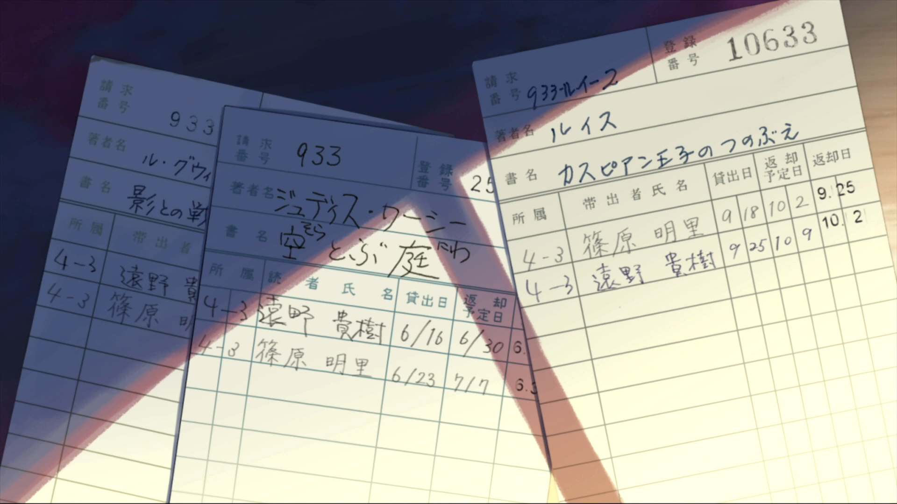
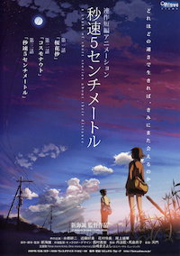
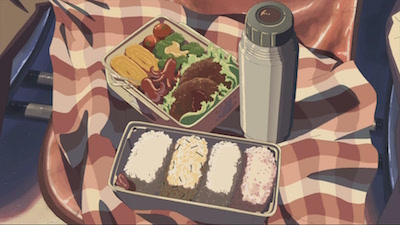

Zooming
5 Centimeters Per Second (Japanese: 秒速5センチメートル Hepburn: Byōsoku Go Senchimētoru?) is a 2007 Japanese animated romantic drama film produced, written and directed by Makoto Shinkai. The film was finished on 22 January 2007. The film consists of three segments: "Cherry Blossom" (桜花抄 Ōkashō?), "Cosmonaut" (コスモナウト Kosumonauto?), and "5 Centimeters per Second" (秒速5センチメートル Byōsoku Go Senchimētoru?), totaling about an hour of runtime. As in Shinkai's previous works, Tenmon composed this film's soundtrack. The film was awarded Best Animated Feature Film at the 2007 Asia Pacific Screen Awards.
Vanilla image
Image with specific width and height
Image with percentage width and height
Tip: press Esc to zoom out.
『雲のむこう、約束の場所』に続く、新海の第3作目の劇場公開作品にあたる。新海作品の顕著な魅力とされる「映像美」を踏襲しつつも、前作までの特徴とされたSF要素が消失し、あくまで「現実」を舞台としている点から前作までとの異質性が指摘されるに至った[2]。アジアパシフィック映画祭「最優秀アニメ賞」やイタリア・フューチャーフィルム映画祭「ランチア・プラチナグランプリ」などの映画賞を受賞した[3]。 キャッチコピーは、どれほどの速さで生きれば、きみにまた会えるのか。 題意は「桜の花びらが舞い落ちる速度」[4]であり、作品冒頭でも述べられている。新海が監督、原作、脚本、絵コンテ、および演出までを手掛けた劇場作品で、惹かれ合っていた男女の時間と距離による変化を「桜花抄」、「コスモナウト」、ならびに「秒速5センチメートル」という短編3話の連作構成で描く[5]。全63分[6]。 本作の上映時間は63分であり、映像上も連続しているが、ストーリー上は3話の短編で構成されており「連作短編アニメーション」と銘打たれている。
Thumbnails only
 Thumbnails that zoom into hi-res images
时间是1990年代至2000年代的日本，远野贵树与篠原明里原本是同班同学的好朋友，自从小学毕业之后，两人因搬家都没有再见一次面。分隔两地的两个人，靠着书信往来保持联络，直到贵树知道即将跟随家人搬到鹿儿岛，距离明里更远的地方，于是两人约定了再见面的时间。计划好的行程，却遇上了暴风雪。之后大家都长大了，各有各的生活，但对彼此的思念，一直留在心中。 本片由三个故事构成，分别是〈樱花抄〉描述贵树和明里的重逢、〈宇航员〉描述在别人眼中的贵树、〈秒速5厘米〉描述之后他们各人的生活事情和贵树内心的徬徨。
Star